18-649 Scenarios and Sequence Diagrams
18649 <2013Fall>
Group 1
Name: Leikai Ma AndrewID:
leikaim
Name: Muyang Yu AndrewID:
muyangy
Name: Han Lin AndrewID:
hanlin
Name: Xiao Chen AndrewID:
xiaoc
Scenarios:
Use Case 1: Passenger
Makes A Hall Call
Scenario 1A:
Passenger arrives at a hallway while elevator is elsewhere.
Pre-Conditions:
- All doors are closed.
- Passenger has already arrived at a hallway to use the
elevator.
- Car is at another floor.
Scenario:
- Passenger pushes hall call (up or down) button for
passenger's desired direction d.
- Passenger sees that corresponding hall button light turns
on.
Post-Conditions:
- Elevator has not yet arrived at the passenger's floor.
- All doors are closed.
- Hall button light for passenger's desired direction is on.
Sequence Diagram:
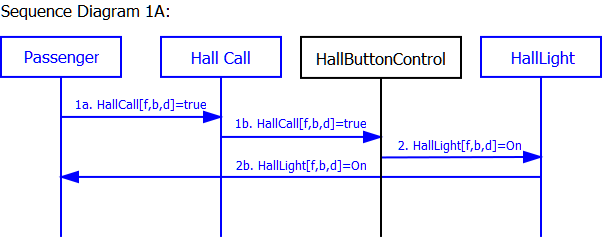
Scenario 1B:
Passenger arrives at a hallway when elevator is already there
and the car is traveling in the same direction as desired by
passenger.
Pre-Conditions:
- Car is at same floor as passenger.
- Car is traveling in same direction d as desired by
passenger.
- At least one door[b,r] is open.
- Hall button light [f,b,d] for
passenger's desired direction is off.
Scenario:
- Door[b,r] starts closing.
- Passenger arrives at a hallway [f, b] to use
the elevator, with intent to travel in direction d.
- Passenger presses hall call button before doors are fully
closed, but after doors are too fully closed for passenger to
enter.
- Hall button lights up.
- Doors complete closing. (You might want to change this
step; it's OK to do that for this project assignment.)
Post-Conditions:
- Elevator is at the passenger's floor.
- Door is closed.
- Hall button light for passenger's desired direction is on.
Sequence Diagram:
Scenario 1C:
Passenger arrives at a hallway when elevator is already there
and the car is traveling in opposite direction as desired by
passenger.
Pre-Conditions:
- Car is at same floor f as passenger.
- Car is traveling in opposite direction ~d than
direction d desired by passenger.
- At least one Door[b,r] is open.
- Hall button light for passenger's desired direction is off.
Scenario:
- Door[b,r] starts closing.
- Passenger arrives at a hallway [f,b] to use
the elevator going in direction d.
- Passenger presses hall call button before doors are fully
closed, but after doors are too fully closed for passenger to
enter.
- Hall button lights up.
- Doors complete closing.
Post-Conditions:
- Elevator is at the passenger's floor.
- All doors are closed.
- Hall button light for passenger's desired direction is on.
Sequence Diagram:
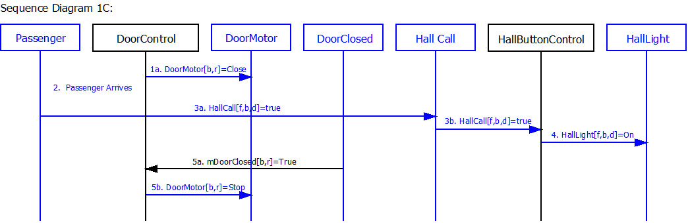
Use Case 2: Passenger
Makes A Car Call
Scenario 2A:
Passenger is in the car and elevator is not at the desired
destination floor.
Author name: Han Lin
Pre-Conditions:
- Car is at floor f, with at least one Door[b,r]
open.
- Passenger is in the car and elevator is not at the desired
destination [g,c], where f != g.
Also, b might or might not be equal to c.
- Car call button for the desired destination is not lit.
Scenario:
- Door[b,r] starts closing.
- Passenger presses the CarCall[f,b] button to
the desired floor at the desired hallway..
- The CarLight[f,b] lights up.
- Door[b, r] complete closing.
Post-Conditions:
- Elevator is at the passenger's floor.
- The CarLight[f,b] indicating the passenger's
destination is on.
- All doors are closed.
Sequence Diagram:
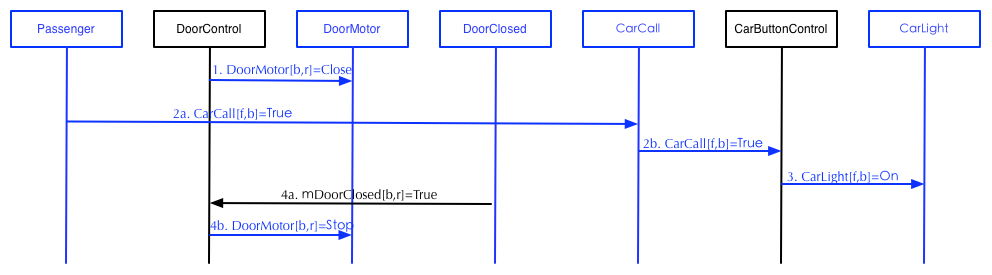
2B: Passenger is in
the car and the elevator has arrived at the passenger's desired
floor, but passenger has not yet exited the car as the doors
begin to close.
Author name: Han Lin
Pre-Conditions:
- Passenger is in the car.
- Elevator has arrived at the desired hallway, but the
passenger has not yet exited the car.
- At least one door[b,r] is open.
Scenario:
- Door[b,r] starts closing.
- Passenger presses CarCall[f,b] to open the
door.
- Door[b,r] opens.
- Passenger exits the car.
Post-Conditions:
- Passenger exited the car.
- Door[b,r] are opened.
Sequence Diagram:
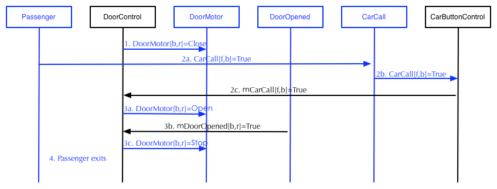
Use Case 3: Passenger
Enters Elevator
Scenario 3A:
Passenger is waiting at a hallway for the elevator and has
already pressed the hall call button.
Author name: Han Lin
Pre-Conditions:
- Car is about to arrive at a hallway [f,b] at
which passenger is waiting.
- The hall call button for passenger's desired direction d
has already been pressed
- The elevator is going in direction d.
- Passenger is outside the car.
- All doors are closed.
Scenario:
- Car stops at the passenger's floor
- Door[b,r] opens.
- Passenger gets aboard.
Post-Conditions:
- Elevator is stopped at the passenger's floor f.
- At lease one Door[b,r] is opened.
- Passenger is in the car.
Sequence Diagram:
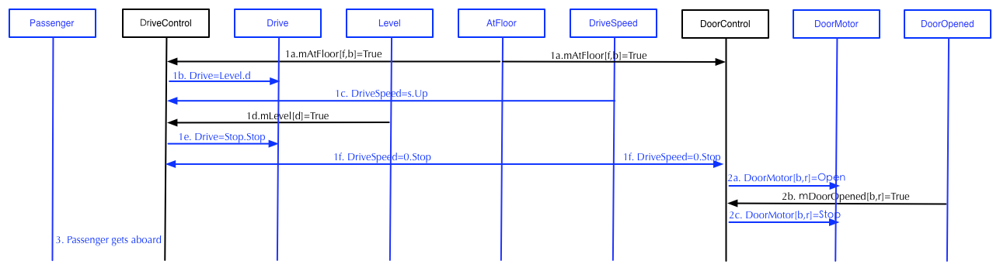
Scenario 3B:
Passenger is waiting in the hallway b. Elevator is full
of passenger and is stopped at the passenger's floor with all
doors opened.
Author name: Han Lin
Pre-Conditions:
- Passenger is waiting in the hallway.
- Elevator is stopped at the passenger's floor.
- At least one door[f,b] is opened.
Scenario:
- The passenger gets on the car.
- The passenger triggers the overweight alarm.
Post-Conditions:
- Elevator is stopped at the floor.
- Passenger is in the car.
- The overweight alarm is on.
- At least one door[f,b] is opened.
Sequence Diagram:
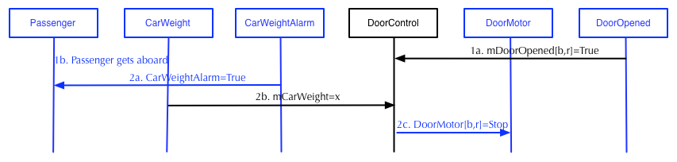
Use Case 4: Passenger
Exits Elevator
Scenario 4A:
Passenger is in the elevator as it arrives at the passenger's
desired hallway.
Author name: Muyang Yu
Pre-Conditions:
- Passenger is inside the car, traveling to desired floor f
and hallway b.
- Car is traveling in direction d
- All doors are closed.
Scenario:
- Car arrives at the floor f
- Door[b,r] opens
- Passenger exits the car
Post-Conditions:
Sequence Diagram:
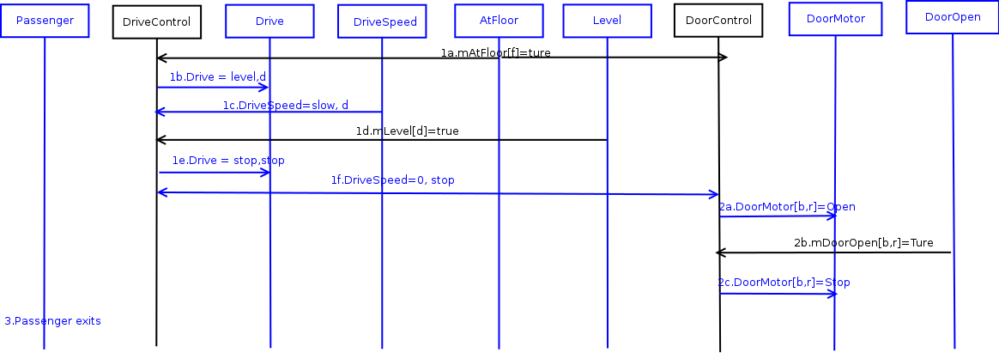
Scenario 4B:
Passenger enters the car, CarWeightAlarm beeps and the passenger
exits.
Author name: Muyang Yu
Pre-Conditions:
- At least one Door[b,*] is open, b is side from
which passenger gets on.
- Passenger is in the car.
- CarWeightAlarm beeps
Scenario:
- Passenger exits the car.
- CarWeightAlarm seize beeping.
Post-Conditions:
- Passenger is back to hallway b.
- CarWeightAlarm is not beeping.
- Doors[f,b] are open.
Sequence Diagram:
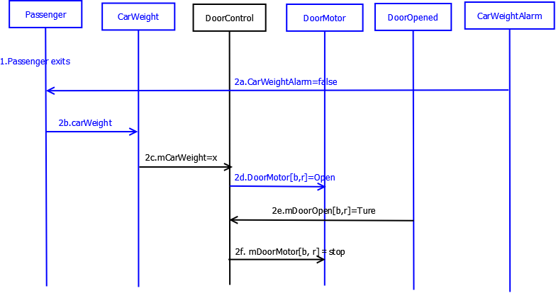
Use Case 5: Passenger
Triggers Door Reversal
Scenario 5A:
Passenger attempts to enter the car as the doors begin to close.
Author name: Muyang Yu
Pre-Conditions:
- Passenger is outside the car.
- Car is stopped at passenger's floor f and hallway b.
- At least one door[b,r] is open.
Scenario:
- Doors start to close.
- Passenger attempts to enter the car and triggers door
reversal.
- Doors start to open.
Post-Conditions:
Sequence Diagram:
Scenario 5B:
Passenger attempts to exit the car as the doors begin to close.
Author name: Example Solutions
Pre-Conditions:
- Passenger is inside the car.
- Car is stopped at passenger's floor f and hallway b.
- At least one door[b,r] is open.
Scenario:
- Doors start to close.
- Passenger exits and door reversal occurs.
- Doors start to open.
Post-Conditions:
Sequence Diagram:
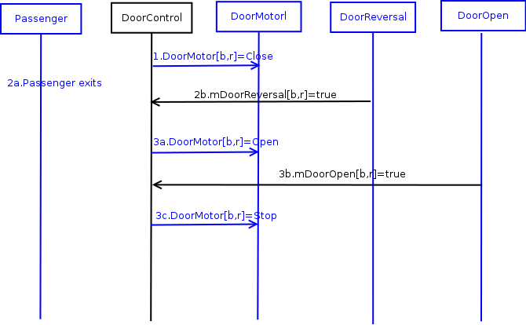
Use Case 6: Determine
Car Position
Scenario 6A: Car moves from hallway f on floor x to adjacent
hallway g on floor y and stops.
Note: Recall that the Drive of the elevator we provided
is never commanded to go Fast, so the elevator only moves Slow
and can therefore stop right away when it sees the appropriate
AtFloor[f, b](True). Your solution will probably involve the
Drive going Fast for some portion of the trip, and the
CarLevelPosition Sensor to plan when to slow down. You will be
given information on how to design a Fast Drive in the upcoming
projects. For Project 2, a Slow Drive will suffice.
Author name: Leikai Ma
Pre-Conditions:
- Car is at hallway [f, b].
- All elevator doors are closed.
- Car is moving in hoistway.
Scenario:
- Drive starts to go slow.
- Car arrives at floor y and AtFloor[y,g]
becomes true.
- Drive starts to go level.
- Drive starts to go stop.
Post-Conditions:
- Door is closed.
- Drive is stopped.
- Elevator is at floor y.
Sequence Diagram:
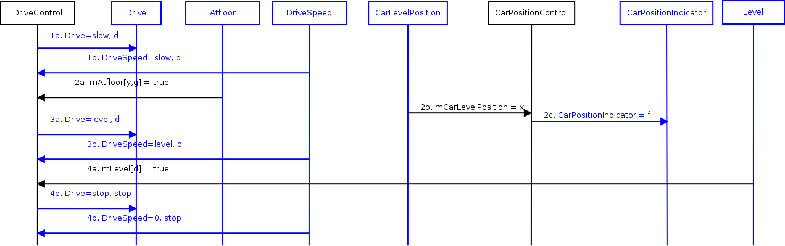
Use Case 7: Determine
Car Direction
Scenario 7A:
Elevator opens doors when Dispatcher's intended direction is Up
or Down.
Author name: Xiao Chen
Pre-Conditions:
- Elevator is stopped at floor f, and AtFloor[f,b]
was last received as True.
- Dispatcher intends direction d and is enabling
pickup in hallway b.
- All doors are closed.
- Both Car Lanterns are off.
Scenario:
- Dispatcher decide next floor.
- CarLantern[d] turn on.
- Door[b,r] start opening.
- Doors are opened.
Post-Conditions:
- Car Lantern turn on.
- Doors are opened.
Sequence Diagram:
Scenario 7B:
Elevator arrives at a hallway and the desired direction is Stop.
Author name: Xiao Chen
Pre-Conditions:
- Elevator is stopped at floor f, and AtFloor[f,b]
was last received as True.
- Dispatcher intends direction Stop (i.e., no selected
direction), with enabled pickup in hallway b.
- All doors are closed.
- Both Car Lanterns are off.
Scenario:
- Dispatcher decide next floor.
- CarLantern[d] turn off.
- Door[b,r] start opening.
- Doors are opened.
Post-Conditions:
- All car lantern on this floor are off.
- Doors are opened.
Sequence Diagram:
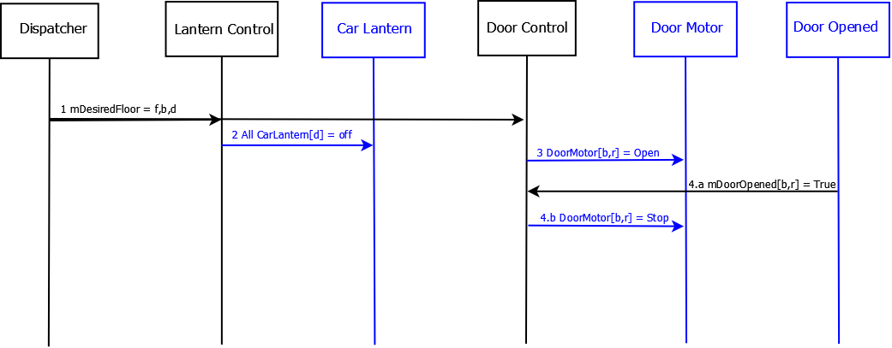
Scenario 7C:
Elevator doors close on a hallway.
Author name: Xiao Chen
Pre-Conditions:
- At least one Door[b,r] is open.
Scenario:
- Door[b,r] starts closing.
- Door[b,r] are closed.
- All CarLantern[d] turn off.
Post-Conditions:
- All doors are closed.
- All car lanterns closed.
Sequence Diagram:
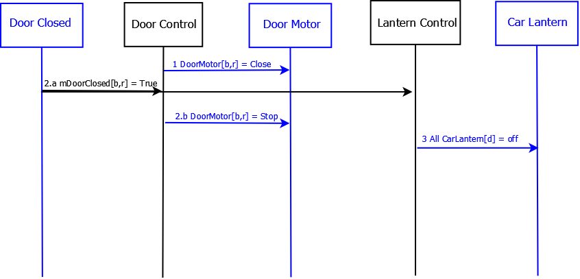
Scenario 7D:
Elevator doors are opened while Dispatcher's send new direction
(Up/Down).
Author name: Xiao Chen
Pre-Conditions:
- Elevator is stopped at floor f, and AtFloor[f,b] was last
received as True.
- At least one door is opened.
Scenario:
- Dispatcher decide next floor.
- All CarLantern[r] turn off.
- Turn on CarLantern[d] based on last received
direction.
Post-Conditions:
- Car lantern changed based on new direction.
Sequence Diagram:
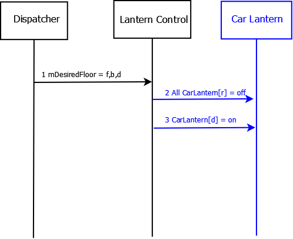
Use Case 8: Move Car to
Next Floor
Scenario 8A: Elevator moves from {floor f, hallway b} to
{floor g, hallway c} in direction d.
Note: You will want to create other scenarios that involve
fast speed for your elevator, but this is a starting point.
Author name: Leikai Ma
Pre-Conditions:
- Elevator is at floor f, with at least one Door[b,r]
open.
- Drive is stopped.
Scenario:
- Door[b,r] closes.
- Drive starts to go slow in direction of d to floor g.
- Drive speeds up to fast.
- Car reaches the commit point of floor g.
- Drive slows down.
- Drive starts to go level.
- Drive starts to go stop.
Post-Conditions:
- Door[b,r] is closed.
- Drive is stopped.
- Elevator is at floor g.
Sequence Diagram:
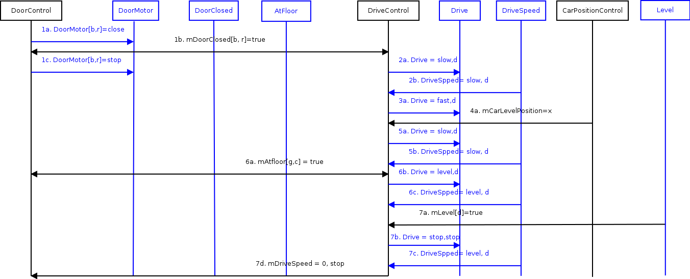
Use Case 9: Cycle Doors
Scenario 9A: Elevator stops at hallway and doors open.
Dispatcher computes next desired floor just as doors open. Doors
close.
Note: This dispatcher is really dumb and stops at every floor,
in order. It would be much better to stop only at floors with
people on them or that people want to go to.
Author name: Leikai Ma
Pre-Conditions:
- Car is stopped.
- AtFloor[f,b] was last received as True.
- All doors are closed.
Scenario:
- Door[b,r] opens.
- Dispatcher computes the next desired floor.
- Door[b,r] closes.
Post-Conditions:
- Door[b,r] is closed.
- Car is still stopped.
- Elevator is still at floor f.
Sequence Diagram:
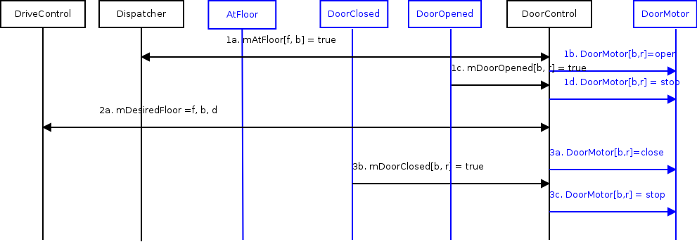
{kind=link}
{kind=link}
{kind=link}
{kind=link}
{kind=link}
{kind=link}
{kind=link}
{kind=link}
{kind=link}
{kind=link}
{kind=link}
{kind=link}
{kind=link}
{kind=link}
{kind=link}
{kind=link}
{kind=link}
{kind=link}